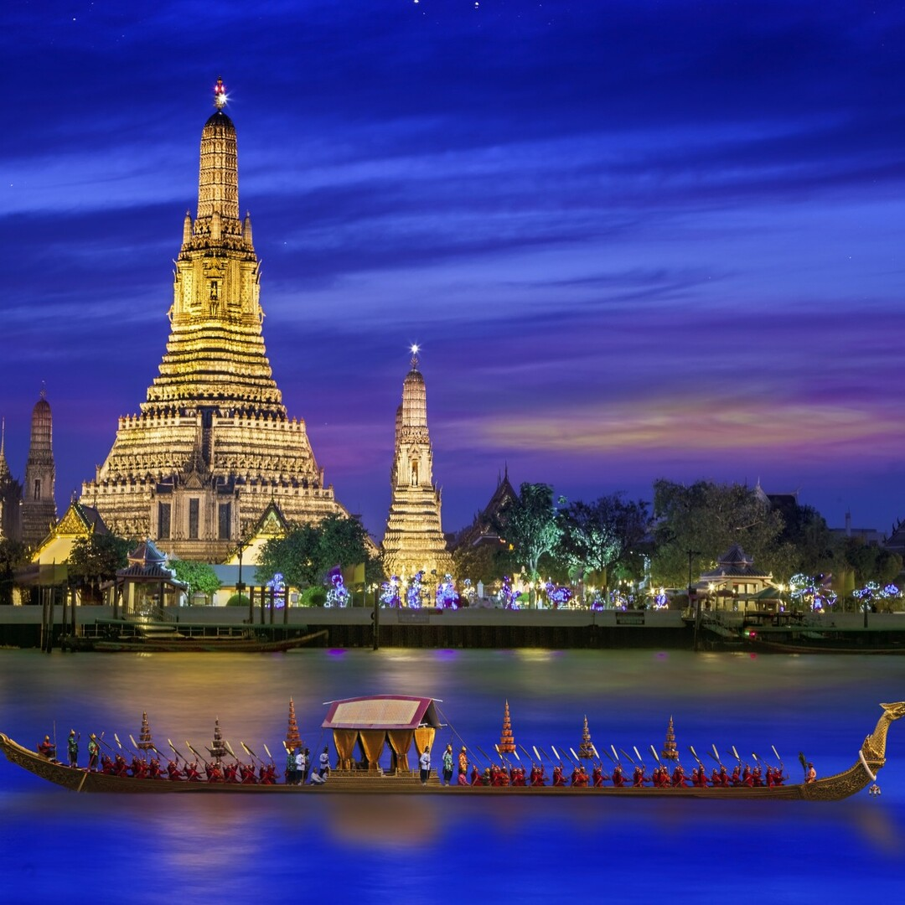

ПОНУДА ЦЕЛА ГОДИНА

БАНГКОК И ПУКЕТ
Бангкок и Пукет, Тајланд
17.08 - 27.08
Откријте го магичниот Тајланд, земја на златни храмови, тропски острови и прекрасни плажи. Истражете го динамичниот Бангкок, уживајте во традиционалната тајландска култура и продолжете кон прекрасниот Пукет, каде ве очекуваат тиркизно море, песочни плажи и тропски пејзажи. Совршена понуда за комбинација од култура, авантура и одмор во текот на целата година.
ТРОПСКА АВАНТУРА
Главниот град на Тајланд и еден од најживописните градови во Југоисточна Азија, познат по своите величествени храмови, традиционални пазари, модерни квартови и живописните улици. Градот нуди уникатна мешавина од богата историја и современ живот, а прошетката покрај реката Чао Праја овозможува поинакво доживување на неговата архитектура и атмосфера.
Еден од најпознатите историски комплекси во Бангкок, кој со векови бил поврзан со кралското семејство и претставува еден од симболите на Тајланд. Во рамките на комплексот се наоѓа и Wat Phra Kaew, еден од најсветите храмови во земјата, додека во продолжение ќе го посетиме и впечатливиот Wat Arun, сместен покрај реката Чао Праја.
Еден од најпознатите тропски острови во Тајланд, препознатлив по прекрасните песочни плажи, топлото Андаманско Море и бујната тропска природа. Пукет нуди совршена комбинација од одмор покрај морето, локална култура, ресторани, кафулиња и живописни места како Phuket Old Town.
Незаборавен излет со брод низ прекрасните тропски острови и тиркизните води на Андаманското Море. Посетата нуди можност за уживање на песочни плажи, пливање, фотографирање и релаксација во прекрасна природна околина, далеку од градската гужва.
Состанок со групата на аеродром во Скопје, 2 часа пред летот. Следува диретен лет до Истамбул па директен лет до Бангкок и пристигнување на аеродром. По завршувањето на аеродромските процедури следува организиран трансфер до хотелот и сместување. По сместувањето е предвидено време за одмор и освежување. Попладнето следува прва прошетка низ околината и запознавање со градот. Вечерта е слободна за вечера и индивидуални активности. Ноќевање во хотел.
Појадок во хотелот и организирано разгледување на Бангкок. Следува прошетка низ централните делови на градот и посета на познатите градски знаменитости, храмови, пазари и живописни улици. Предвидено е време за фотографирање и запознавање со атмосферата на Бангкок. Потоа следува слободно време за ручек, кафе, шопинг и индивидуално разгледување. Во попладневните часови е предвидена прошетка покрај реката Чао Праја и слободно време за одмор. Вечерта е слободна за вечера и индивидуални активности. Ноќевање во хотел.
Појадок во хотелот и организирана посета на Големиот дворец, еден од најпознатите комплекси во Бангкок. Следува разгледување на комплексот и храмот Wat Phra Kaew. Потоа следува посета на Wat Arun, познат по впечатливата архитектура и положбата покрај реката Чао Праја. Предвидено е време за фотографирање и уживање во околината. Следува слободно време за ручек и индивидуални активности. Попладнето е предвидено за враќање во хотелот и одмор. Вечерта е слободна за вечера. Ноќевање во хотел.
Појадок и организиран трансфер до аеродромот за лет кон Пукет. По пристигнувањето следува трансфер до хотелот и сместување. По сместувањето е предвидено време за одмор и уживање во тропската атмосфера. Следува слободно време за прошетка низ околината, посета на плажата и индивидуални активности. Вечерта е слободна за вечера и уживање покрај морето. Ноќевање во хотел во Пукет.
Појадок и организирано заминување на целодневен излет со брод. Следува пловење низ тропските острови и прекрасните води на Андаманското Море. Предвидени се застанувања на одбрани острови и плажи, со време за капење, фотографирање, одмор и уживање во природата. Во текот на излетот е предвидено слободно време за ручек. По завршувањето на излетот следува враќање во Пукет. Вечерта е слободна за одмор и индивидуални активности. Ноќевање во хотел.
Појадок во хотелот и слободен ден за уживање во Пукет. Предвидено е време за одмор на плажа, капење и индивидуални активности. Патниците ќе имаат можност за прошетка низ Phuket Old Town, посета на локалните продавници и пазари или уживање во рестораните и кафулињата. Попладнето е слободно за дополнителен одмор и уживање покрај морето. Вечерта е слободна за вечера и индивидуални активности. Ноќевање во хотел.
Појадок во хотелот и слободно време за индивидуални активности. Денот е предвиден за дополнително уживање на плажите на Пукет, капење, одмор и фотографирање. По желба, патниците можат да уживаат во локалните ресторани, кафулиња и продавници или да поминат повеќе време покрај морето. Попладнето е слободно за одмор и подготовка за враќање во Бангкок. Ноќевање во хотел.
Појадок и организиран трансфер до аеродромот за лет кон Бангкок. По пристигнувањето следува трансфер до хотелот и сместување. Остатокот од денот е предвиден за слободна прошетка низ градот, шопинг и индивидуално разгледување. Патниците ќе имаат можност повторно да ги посетат омилените делови од градот или да уживаат во локалните ресторани и кафулиња. Вечерта е слободна за одмор. Ноќевање во хотел.
Појадок во хотелот и слободен ден за дополнително разгледување на Бангкок. Предвидено е време за посета на локалните пазари, шопинг, фотографирање и индивидуални активности. Патниците ќе имаат можност за прошетка покрај реката Чао Праја или уживање во локалната гастрономија. Попладнето е предвидено за одмор и подготовка за заминување. Вечерта е слободна за последна вечера во Бангкок. Ноќевање во хотел.
Појадок во хотелот и одјавување согласно предвиденото време. По собирањето на багажот следува организиран трансфер до аеродромот. По пристигнувањето следува пријавување за летот и завршување на потребните аеродромски процедури. Потоа следи диретен лет до Истамбул, па директен лет до Скопје. По пристигнувањето и преземањето на багажот завршува организираното патување.